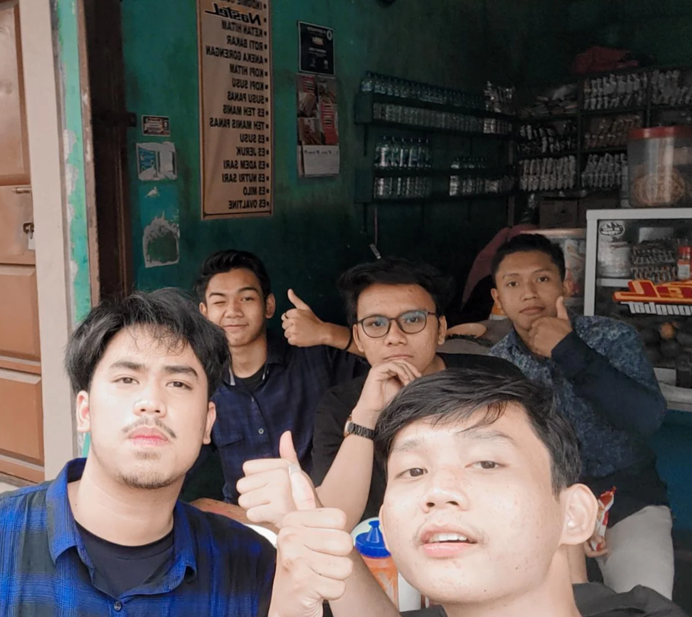

Introduction
Hi, My name is Fathirul Ikhsan, my friends usually called me Fathir. I was born on February 28th, 2003. I'm from Jakarta. My hobbies are swimming and playing games, I have a dream to become a doctor, but I failed because of financial constraints. I finally decided to major in IT, finally I studied at ITPLN after failing to take FK at UIN Syarif Hidayatullah and UPN Veterans Jakarta, although I failed at several universities but I will not give up even though ITPLN is only a private campus but I am sure in the future come i will be a successful person
